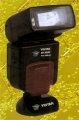

银燕 BY-360AF 闪光灯具备以下特点：具有五档功率分档；闪光灯头俯仰角度0-90°，左右旋转-150°～+180°，可作任意角度反射光摄影；具有自动断电功能；低压触发、微电流触发闪光。
刚进了个AF３８０的，感觉不错，指数够大，自动变焦距准确，很实用，外观不错，６２０元的价位，性价比很高，工艺稍显粗糙，不仔细看和国外高档灯也差不了哪去。在８４年买了个指数１８的高压灯一直用到现在，这也是我买银燕灯的原因。
指数够，没有虚标现象，自动调焦准确实用。
还没有发现，这个价位也说不出多大的缺点。
借地褒贬银燕.为给数码机配一个同步闪,刚买进一只38A,还没整明白.总体感觉是爱你不容易!价格便宜,好象也就是如此.至于性能不好说. [kflpxnwjll 编辑于 2004-01-20 00:10]
便宜,能闪光.hehe唉.........
性能还谈不上,可其外观差极了,连几块钱的玩具都不如.在商家的暗灯下还没发现,后来一看真倒胃口.一个外壳就那么难?可怜可悲可气的民族工业!!!460RMB---冤!应该饿死这些不求上进的企业!
一般
价格比佳能的便宜
没有E-TTL功能。